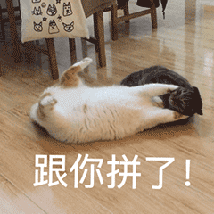
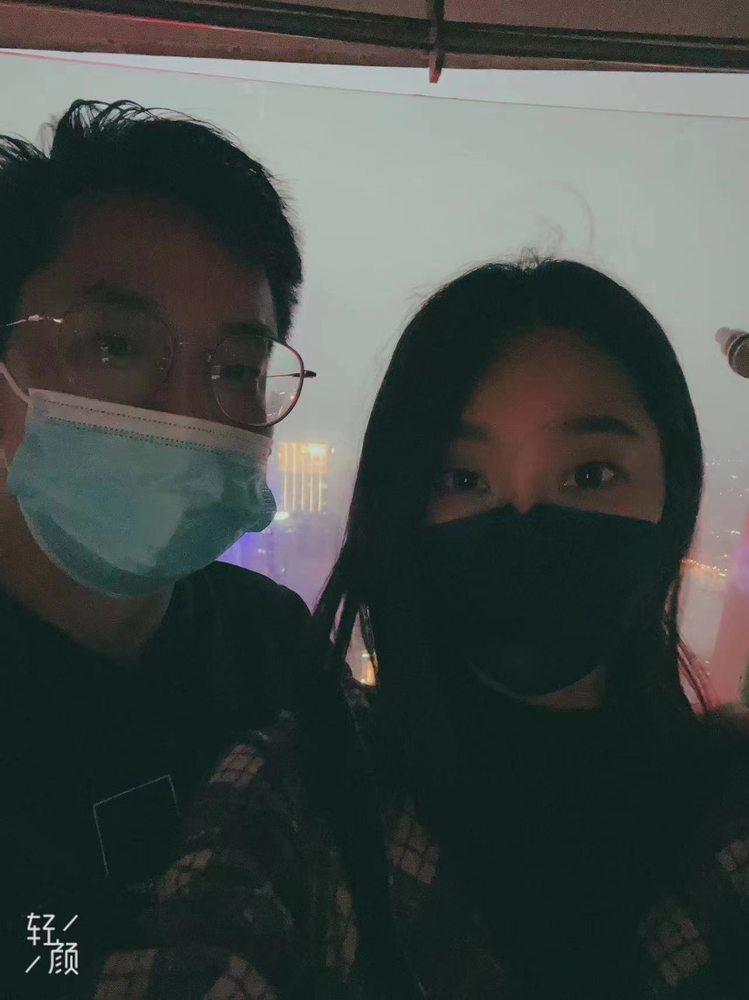

第一次坐在羊旁边撇羊的时候，
第一次感谢小羊的时候
跟羊一起要加班的时候，
工作多要跟羊挑灯夜战的时候
第一次带羊去吃烧烤的时候
第一次跟羊走在云廊之上的长椅上，俯身吻羊的时候，
跟小羊一起听音乐的时候，
第一次带羊去小树林带时候

第一次被羊敲的时候
第二次带羊去小树林带时候，
第三次...
第N次带羊去小树林的时候，
去小树林堵小羊的时候，
第一次带小羊回家玩VR的时候，
追着飞奔的小羊奔跑在雨中的时候，
扶着醉醺醺的小羊回家的时候，
跟羊在电梯里追逐的时候
把醉醺醺的小羊抱着放到床上休息的时候，
第一次把小羊抱在怀里的时候，
带着一杯就上头到小羊压马路的时候，
第一次下厨投喂小羊的时候，
看着小羊把狗子鞋带绑起来的时候，
第一次跟小羊待在家里吃着零食期待台风天的时候，
带着小羊在西塘的小阁楼把酒言欢的时候，
带着小羊骑着小电驴奔驰在宁波的大街上的时候，
第一次回家就能吃上饭小羊做的饭的时候，
第一次感觉到两个人比一个人要开心的时候，
第一次满脑子塞满小羊患得患失的时候，
第一次惹小羊生气不耐烦的时候，
第一次听小羊唱歌的时候，
在上海跟小羊一起站城市最高处的时候，
默默吃小羊的醋的时候，
想带着小羊走遍每个角落的时候，
跟小羊分享心里话的时候，
用自以为是的方法治愈小羊的时候，
，，，
时间停滞
，
